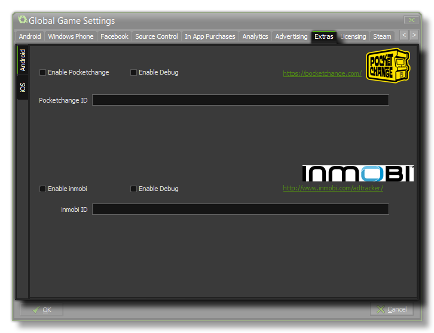

The Extras Tab
This section deals with the Extras tab of the Global Games Settings Window.

The Extras Tab deals with extra SDK options for those companies that don't easily fit into any other category. Currently you can find the Inmobi and PocketChange setup options here for
the Android and iOS target modules.
Pocket Change
PocketChange is a system that rewards virtual currency for plays of your game. Once you have activated this system on this tab, when the player starts your app GameMaker:Studio will make
two calls to the PocketChange network. The first is to display your daily reward (if any) which will also launch their api, then there is another call which displays a button on the screen which, if the user touches it,
will display the PocketChange shop. The normal currency exchange is 10 "tokens" per day, but this can be negotiated with the people at PocketChange so your users can earn for gaining achievements, high scores etc...
You can also test your PocketChange account by flagging the "Enable Debug" check-box, in which case the standard Daily Reward will be awarded each run of the game until this flag is
un-checked again, and you will receive extra debug messages in the console.
For more information you can go to PocketChange.com.
Inmobi
Inmobi offer a number of services like Analytics and Ad Mediation, however GameMaker:Studio only supports their Ad Tracking
functionality. You must first sign up for their services and fill in the necessary details for your ad providers on their dashboard, then add your Inmobi ID to this tab and tick the "Enable Inmobi" checkbox to start
tracking your ad click-through.
You can also test your Inmobi account by flagging the "Enable Debug" check-box, in which case you will receive extra debug messages in the console.
For more information you can go to Inmobi.com.
NOTE: This functionality is limited to the Professional Version of GameMaker:Studio and only then is it available for the
Android module.